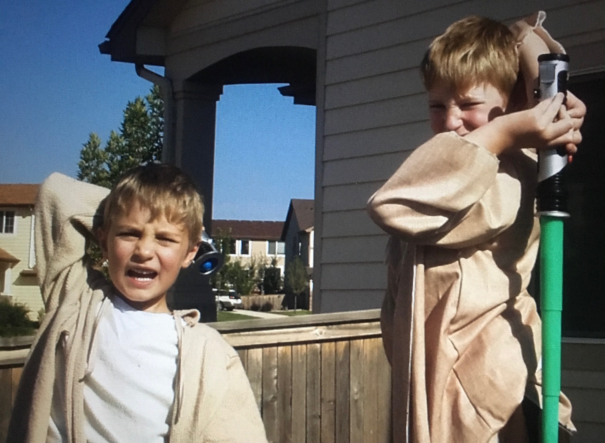

My Early Life
I was raised in Littleton, Colorado (a suburb of Denver). I love Colorado and like to go back when I can. I am the oldest of three children and so I learned leadership skills from a very early age. In our family, our motto was "Work Hard, Play Hard, Choose the Right, Be Happy!" I loved growing up in a household where these things were emphasized. I developed strong faith in Jesus Christ, learned to love learning, and developed my abilities as an athlete.
 Me (right) and younger brother Andrew (left) dressed up as Jedi Knights from Star Wars (personal photo).High School
I attended Columbine High School in Littleton, Colorado and graduated in the top 10% of my class. Many people know Columbine High School from the shooting that happened; this is sad because Columbine High School is so much more than a tragedy and is such an amazing place to get an education. I played football and basketball in addition to throwing the shotput and discus. I was an All-State Offensive Lineman for my football team. Below is a video where teachers at Columbine High School (two of which I personally had) talk about their experience with the shooting that occured.
Even with the tragedy, Columbine High School will always hold a special place in my heart (Video Courtesty of YouTube.com and 9News).My Mission
I served my mission for The Church of Jesus Christ of Latter-day Saints in Budapest, Hungary; I absolutely loved my experience there. I met so many wonderful people and learned how to speak Hungarian. I developed a deeper love for my Savior, Jesus Christ, and gained a stronger testimony of His restored gospel.
I loved Hungary so much and am excited to go back one day (personal photo).College Life and Hobbies
I returned home from my mission in 2018, and shortly after, I began attending Brigham Young University. I have been studying finance while at BYU in addition to playing football. If you are interested, you can check out my ESPN profile here. The best thing that happened to me while at BYU was marrying my wife. Her name is Kate and we recently welcomed our first child into the world. I am a very happy husband and father!
I am so blessed to have found such a wonderful wife (personal photo)!While at college, I have been very busy. However, I have still found time for two of my favorite hobbies: playing basketball and going golfing. Both of these activities motivate me to improve and help me be better physically and mentally.
I love to golf; if only I had more time to do it (personal photo).Contact Information
Please reach out if you have any suggestions for how the structure of this website could be improved!
Email: notrealemail@fakeemail
Phone: (###) ###-####